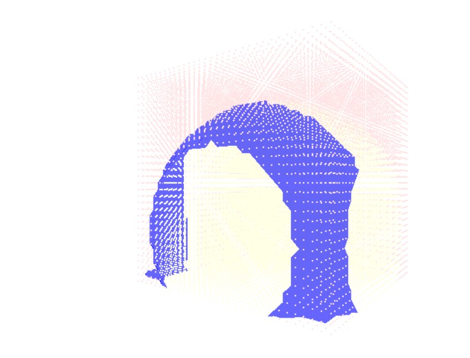
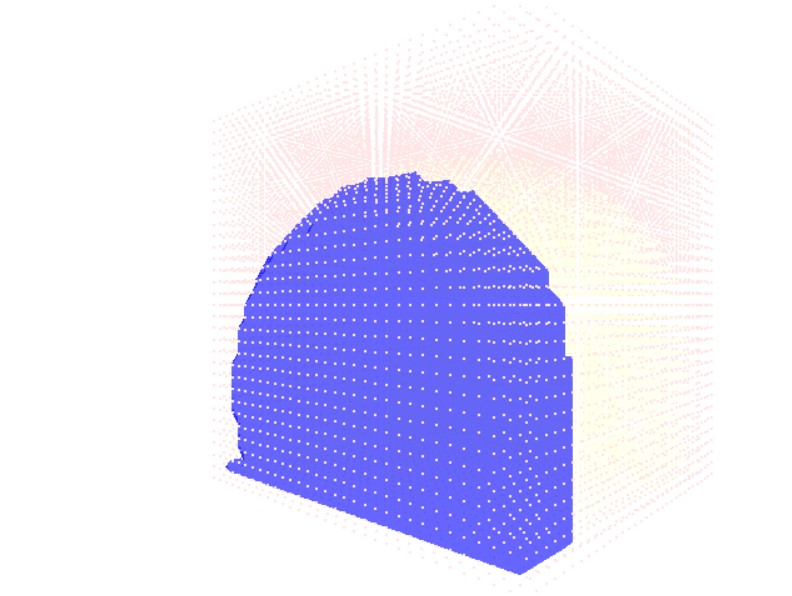

An implementation of Marching Cubes with a demonstration of camera manipulation in OpenGL
Kartikeya Dubey - 2020A7PS0031H
Group E
The Marching Cubes algorithm is a method to ascertain a 3D polygonal mesh from a discretely placed
scalar values. i.e., given a grid of points, this algorithm generates a polygonal mesh to encapsulate these points best.
The algorithm has an ingenious method to do this, it splits the space into cubes to analyse. Each cube consists of 8 vertices (the values at which we are given, either 1 or 0).
Then, depending on the configuration of the vertices which are 1 and which are 0, the mesh that lies completely within that cube is generated.
Which this may result in 28 possibilities, they boil down to 15 unique configurations, the rest
are symmetries of the same. In order to get all possible permutaions of this cube, I have used a
lookup table that contains the triangles necessary for each vertice being a 1.
Note: The vertices rendered red are 0s , and yellows are 1s
To begin With let us look at the initial result:

Here as can be seen, the mesh are open, since the points beyond the border
are not considered. To combat this, I have set all surface points to a value of 0. Here is the updated view

As can be seen, the Meshes are now closed.
To get a better view of the algorithm, here are some complex shapes rendered in the algorithm. Here, the last image is at a higher cube-edge-size, as can be seen, some of the detail is lost here